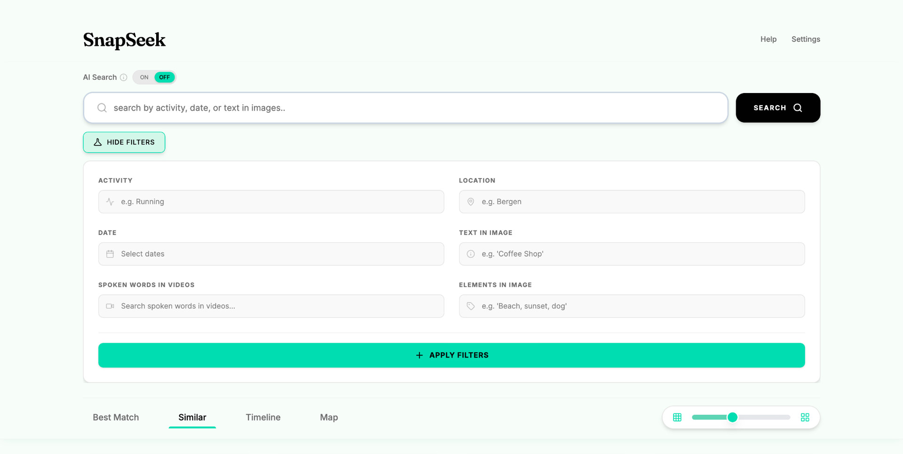

SnapSeek.
SnapSeek er et søkeverktøy for å finne bestemte bilder i store samlinger av livsloggdata. I evalueringen vår oppdaget vi at nybegynnere slet med tekniske begreper, filtrering og navigasjon i et system utviklet for eksperter. Vi redesignet derfor søkeopplevelsen med tydeligere filtre, enklere navigasjon, søkehistorikk og AI-støttet søk. Gjennom brukerinnsikt, prototyping og testing undersøkte vi hvordan løsningen kunne bli mer intuitiv for nye brukere.
MIX204 · Universitetet i Bergen2026
Utforsk prototypen i Figma ↗

